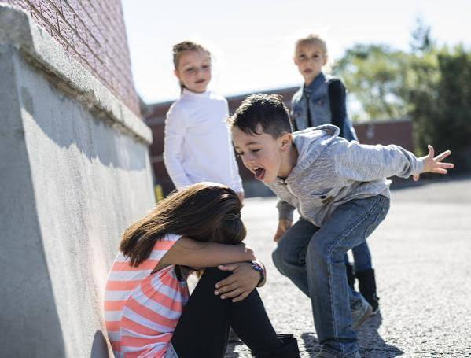
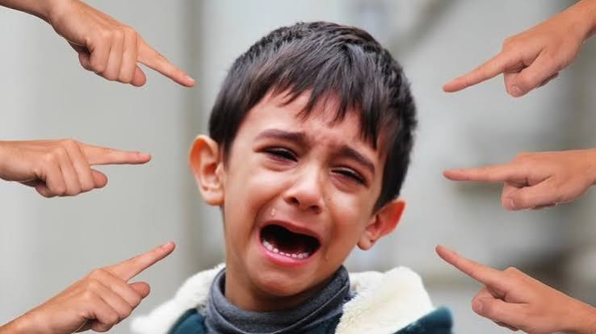

01.
Repetición
Las agresiones suceden repetidamente durante un periodo de tiempo, en lugar de ser un incidente aislado.
El bullying no es un juego, no es una broma y nunca debería ser parte de la experiencia de nadie. Informarnos es el primer paso para construir espacios seguros para todos.
Conoce más sobre el bullying →El bullying, también conocido como acoso escolar, es una forma de violencia en la que una persona o un grupo ejerce agresiones de manera repetida contra otra persona.
Puede manifestarse mediante palabras, acciones físicas, exclusión social, amenazas o medios digitales. Generalmente existe un desequilibrio de poder que dificulta que la persona afectada pueda defenderse.
No se trata simplemente de una discusión entre compañeros. Es una conducta que puede afectar profundamente la seguridad, la autoestima y el bienestar de quienes la experimentan.

Existen características que permiten diferenciar el acoso de un conflicto ocasional.
Las agresiones suceden repetidamente durante un periodo de tiempo, en lugar de ser un incidente aislado.
Existe una diferencia de fuerza, influencia, popularidad o posición social que dificulta que la víctima pueda defenderse.
La conducta busca intimidar, humillar, excluir o causar daño a otra persona.
No siempre es visible. Algunas de sus manifestaciones pueden pasar desapercibidas para profesores, familiares y compañeros.
Consiste en agresiones que afectan físicamente a otra persona, como empujones, golpes, patadas, destrucción de pertenencias o intimidación física.
Agresión física
Se manifiesta mediante insultos, apodos ofensivos, burlas constantes, amenazas, comentarios humillantes o ridiculización.
Palabras que lastimanBusca perjudicar las relaciones de una persona, excluirla deliberadamente de grupos, difundir rumores o manipular amistades.
Exclusión y aislamientoIncluye intimidación, manipulación, amenazas, humillaciones y conductas que generan miedo o inseguridad de manera constante.
Daño emocionalEs el acoso realizado mediante internet, redes sociales, videojuegos o aplicaciones. Puede incluir mensajes ofensivos, difusión de rumores y publicación de contenido para humillar.
Violencia digitalOcurre cuando una persona es acosada debido a características como su apariencia, discapacidad, origen, cultura, idioma o diferencias personales.
DiscriminaciónCada persona reacciona de manera diferente. Algunas señales pueden indicar que alguien necesita apoyo, aunque no necesariamente significan que exista bullying.
El acoso puede afectar distintas áreas de la vida. Sus consecuencias pueden continuar incluso después de que las agresiones hayan terminado.
Puede generar ansiedad, tristeza, inseguridad, miedo, pérdida de autoestima y dificultades para sentirse seguro en diferentes entornos.
Puede dificultar la confianza en otras personas, provocar aislamiento y afectar la capacidad de establecer relaciones saludables.
El estrés y la preocupación pueden afectar la concentración, la asistencia escolar, la participación en clase y el aprendizaje.
La prevención del bullying es una responsabilidad compartida. Todos podemos contribuir a construir espacios de respeto.
Recuerda que no es tu culpa. Busca a un adulto de confianza, un familiar, profesor u orientador escolar. Explica lo que está ocurriendo y solicita apoyo. Si sucede en internet, guarda evidencia y busca ayuda antes de responder a las agresiones.
No participes en las burlas ni compartas contenido que humille a alguien. Si es seguro hacerlo, muestra apoyo a la persona afectada y comunica lo ocurrido a un adulto responsable.
Reconoce el daño que tus acciones pueden causar. Detén las conductas, evita justificar las agresiones, escucha a los demás y busca orientación para aprender a relacionarte de manera respetuosa.
"Un entorno seguro comienza cuando dejamos de normalizar aquello que lastima a los demás."
EL CAMBIO TAMBIÉN COMIENZA CONTIGO.
Esta encuesta busca conocer las experiencias y percepciones de las personas sobre el bullying. Tus respuestas nos ayudan a comprender mejor esta problemática.